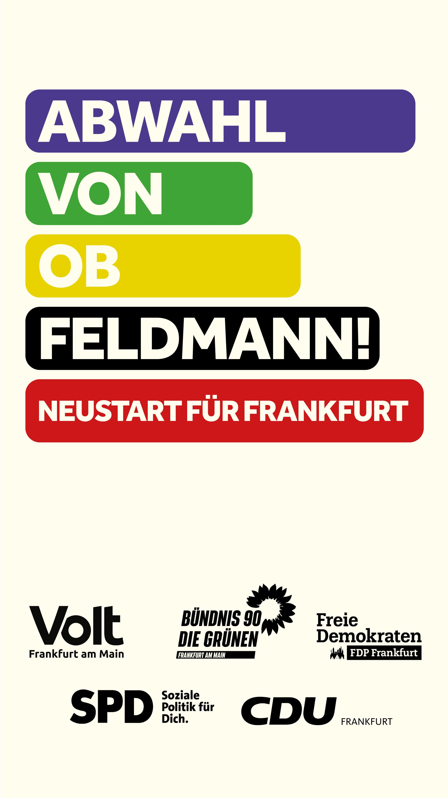
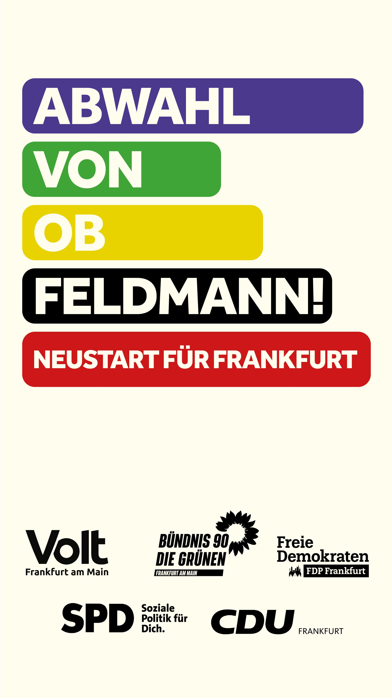

Abwahl von OB Feldmann.
Am 06.11.2022 mit JA stimmen!
Hier informieren wir als Bündnis zur Abwahl des Oberbürgermeisters in Frankfurt am Main.
Digitaler Flyer

 

Impressum
folgt noch
Datenschutz
folgt noch